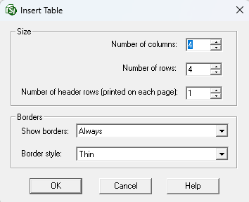

This command can also be executed from the SI Editor's Table's Right-click menu.
The Insert command provides the capability to insert tables, rows, and columns in new or existing tables. Tables are a powerful tool for organizing and displaying data in your Section.

 In the event of an error, click outside the table and use the Undo (Ctrl+Z) command. To learn more, see the Table Tips and Tricks topic.
In the event of an error, click outside the table and use the Undo (Ctrl+Z) command. To learn more, see the Table Tips and Tricks topic.
Insert Table Options
Size
- Number of columns: Allows you to choose the number of columns needed to create a Formatted Table.
- Number of rows: Allows you to choose the number of rows needed to create a Formatted Table.
- Number of header rows (printed on each page): Allows you to choose the number of rows needed to print at the top of each page of a Formatted Table when the table cannot fit on one page.
Borders
- Show borders: Select whether the borders appear Never, Only on screen, Only when printing, or Always. The default setting is Always.
- Border style: Select whether the borders appear Thin, Medium, or Thick. The default setting is Thin.
Other Insert Menu Options
Formatted Tables, whether newly created or edited, allow you to insert rows above or below your current selection. For columns, you can insert them before or after the selected column, but only one at a time.
- Row Above Current Row: Inserts the same number of selected rows above the rows where the cursor is positioned.
- Row Below Current Row: Inserts the same number of selected rows below the rows where the cursor is positioned.
- Column Before Current Column: Inserts a new column before the column where the cursor is positioned.
- Column After Current Column: Inserts a column to be inserted after the column where the cursor is positioned.
Standard Windows Commands
 The OK button will execute and save the selections made.
The OK button will execute and save the selections made.
 The Cancel button will close the window without recording any selections or changes entered.
The Cancel button will close the window without recording any selections or changes entered.
 The Help button will open the Help Topic for this window.
The Help button will open the Help Topic for this window.
How to Use This Feature
 To Insert A new Table:
To Insert A new Table:
- To insert a Formatted Table, perform one of the following:
- Click the Formatted Table button on the Tagsbar
- Select the Table menu and select Insert, then select Table
- Use the keyboard shortcut F9
- In the Insert Table window, in the Number of columns, Number of rows, and Number of header rows fields within the Size section, retain the default settings or perform one of the following:
- Type the value in each field
- Use the arrows to increase or decrease the value
- In the Borders section, retain the default settings or perform one of the following:
- Select the Show borders drop-down to select Never, Only on screen, Only when printing, or Always
- Select the Border style drop-down to select Thin, Medium, or Thick
- Click OK
- To save the changes, click outside the table and perform one of the following:
- Click the Save button on the Toolbar
- Select the File menu and select Save
- Use the keyboard shortcut Ctrl+S
To Insert A Single Row or Column:
- In the Editing window, highlight a row or column, then perform one of the following:
- Hover over the selected row or column, right-click and select Insert
- Click in the first cell and select the Table menu, then select Insert
- Select Row Above Row, Row Below Row, Column Before Column, or Column After Column
- To save the changes, click outside the table and perform one of the following:
- Click the Save button on the Toolbar
- Select the File menu and select Save
- Use the keyboard shortcut Ctrl+S
To Insert Multiple Rows:
- In the Editing window, highlight two or more rows, then perform one of the following:
- Hover over the selected rows, right-click and select Insert
- Click in the first cell and select the Table menu, then select Insert
- Select Rows Above Selected Rows or Rows Below Selected Rows
- To save the changes, click outside the table and perform one of the following:
- Click the Save button on the Toolbar
- Select the File menu and select Save
- Use the keyboard shortcut Ctrl+S
Additional Learning Tools
 Watch the Formatted Tables eLearning module within Chapter 3 - Getting Started.
Watch the Formatted Tables eLearning module within Chapter 3 - Getting Started.
Users are encouraged to visit the SpecsIntact Website's Support & Help Center for access to all of our User Tools, including Web-Based Help (containing Troubleshooting, Frequently Asked Questions (FAQs), Technical Notes, and Known Problems), eLearning Modules (video tutorials), and printable Guides.